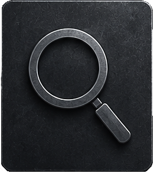
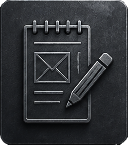
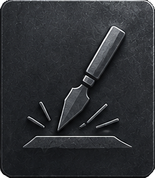
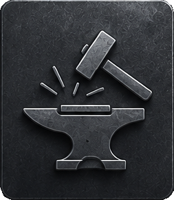
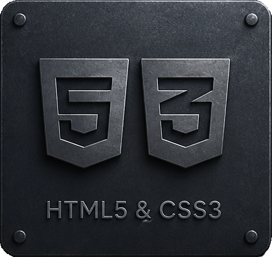
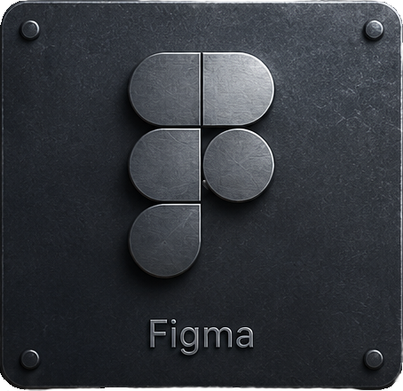
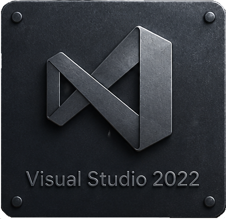
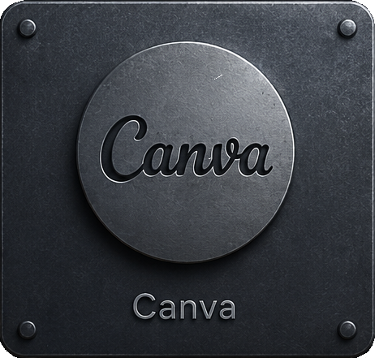
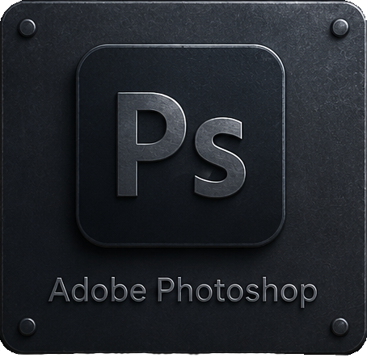

The Process

1. Discovery
Understanding and analysing your goals, requirements, and creative vision.

2. Conceptualization
Sketching the blueprint through wireframes, sitemaps, mood boards, and early concepts.

3. Refinement
Refining visuals, interactions, and high-fidelity details into a cohesive experience.

4. Production
Turning blueprints into reality through meticulously crafted code and responsive design.
5. Delivery
Launching a polished, optimized, and responsive website ready for the world to explore.

Tools I Use

HTML5 & CSS3
Crafting responsive, clean, structural websites
JavaScript
Dynamic functionality, interactive elements and animations

Figma
Designing blueprints, prototyping, and wireframes

Visual Studio 2022
Write, organize, debug and manage CSS code

Canva
Creating visual assets and graphics

Adobe Photoshop
Image editing and custom visual designs